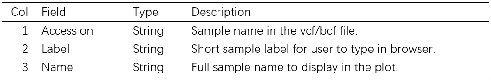
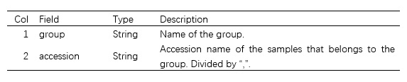
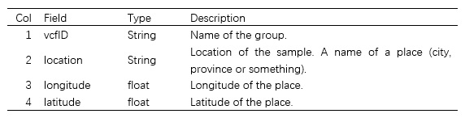
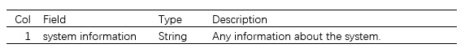

4.4. File Formats
To draw the plots, 3 self-defined files need to be added into configuration file.
Metadata File
In this file, there are at least 3 columns separated by \t. It is used to gives the user a simpler way to select samples. First 3 columns, which are vcfID, AccessionName and DisplayName are required, and others are optional. vcfID means the id of the sample in the vcf file, AccessionName is the simple and easy to remember name for users to input at the browser, and DisplayName is the full name that will display in plot. Other columns are optional, to show some other information that users may need.
It's the ONLY file that have header.
Example
vcfID AccessionName DisplayName Passport Altitude MiniCore
TA10108 TA10108 TA10108 Tajikistan NA MC
TA10106 TA10106 TA10106 Kyrgyzstan 743 MC
TA10103 TA10103 TA10103 Georgia NA -
TA10101 TA10101 TA10101 Armenia NA -
TA1631 TA1631 TA1631 Afghanistan 915 MC
TA1635 TA1635 TA1635 Unknown NA -
TA10212 TA10212 TA10212 Uzbekistan 773 MC
TA10210 TA10210 TA10210 Uzbekistan 930 MC
Column Description

Group Information File
In this file, information of group is recorded. There are 2 columns in total, without header, separated by \t.
Example
Group1 S1,S2,S3
Group2 S4,S5
Group3 S1,S2,S3,S4,S5
Column Description

Sample location File
In this file, location of group is recorded. There are 4 columns in total, without header, separated by \t.
Example
TA10069 Afghanistan 69.166667 34.5
TA10070 Afghanistan 69.166667 34.5
TA10071 Afghanistan 68.833333 36
TA10072 Afghanistan 68.712273 35.956332
TA10073 Afghanistan 68.712273 35.956332
TA10074 Afghanistan 68.712273 35.956332
TA10075 Afghanistan 68.712273 35.956332
Column Description

System Info file
Optional. In this file, you can write anything you want to show on the SnpHub instance.
Example
OS: Centos7
Administrator: Tom
Contact: Tom@some_email.com
Column Description
